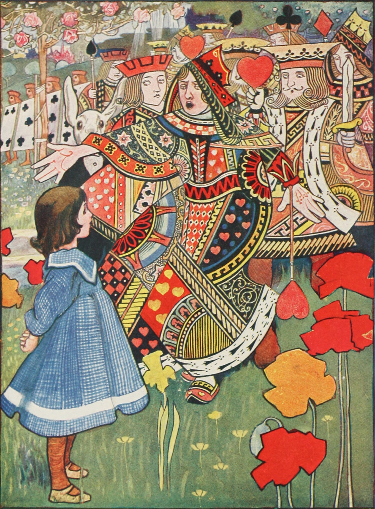

Alice's Adventures in Wonderland
Fantasy
Literary nonsense
Children's literature
Absurdist fiction
Alice's Adventures in Wonderland, widely beloved British children's book by Lewis Carroll,
published in 1865.
With its fantastical tales and riddles, it became one of the most popular works of
English-language fiction.
It was notably illustrated by British artist John Tenniel.
The story centres on Alice, a young girl who falls asleep in a meadow and dreams that she
follows the White Rabbit down a rabbit hole.
She has many wondrous, often bizarre adventures with thoroughly illogical and very strange
creatures, often changing size unexpectedly.
